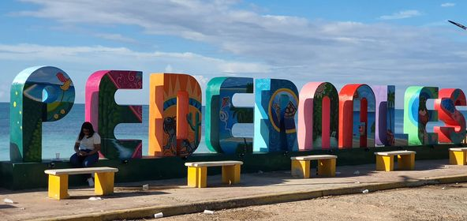
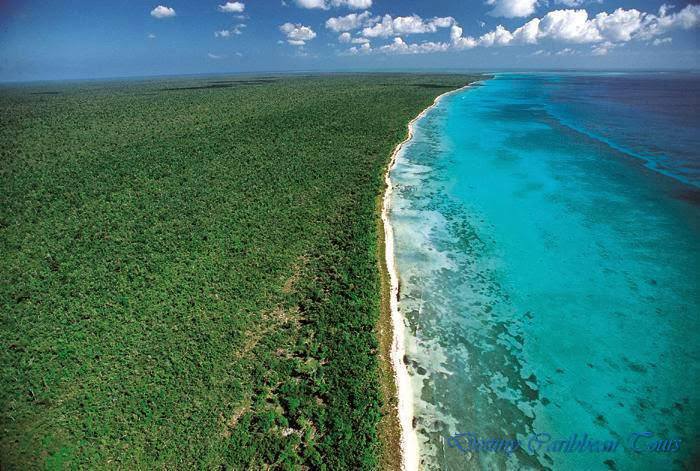
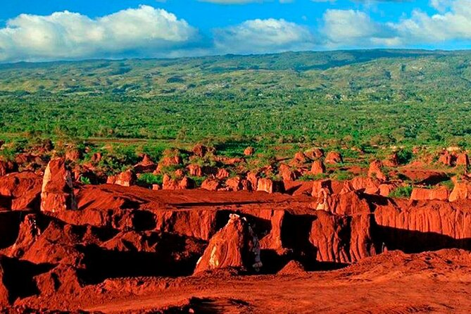

Explora la Belleza Natural de Pedernales
Pedernales es un destino turístico en República Dominicana conocido por sus playas, montañas, y parques naturales. Ubicado en la región suroeste de la República Dominicana, Pedernales es un tesoro oculto que ofrece una experiencia auténtica e inigualable para los amantes de la naturaleza y el turismo de aventura. Este rincón del Caribe se destaca por su rica biodiversidad, playas vírgenes y paisajes impresionantes que capturan la esencia de la belleza natural en su estado mas puro.

Bahía de las Águilas: La Joya de Pedernales
Sin duda, la principal atracción de Pedernales es la famosa Bahía de las Águilas, considerada una de las playas más hermosas del mundo. Sus aguas cristalinas y arenas blancas se extienden por kilómetros, ofreciendo un entorno prístino que te dejará sin aliento. Este paraíso aislado es perfecto para quienes buscan desconectarse del bullicio y disfrutar de la tranquilidad en un ambiente paradisiaco.

Parque Nacional Jaragua: Un Refugio de Biodiversidad
Pedernales también es hogar del Parque Nacional Jaragua, una vasta área protegida que alberga una impresionante variedad de flora y fauna. Aquí, los visitantes pueden explorar bosques secos, humedales y las espectaculares lagunas de Oviedo, donde se pueden observar flamencos rosados y otras aves migratorias. El parque es un santuario para la vida silvestre y ofrece diversas oportunidades para la observación de aves, senderismo y exploración.

Cabo Rojo: Aventura y Paisajes Inolvidables
Cabo Rojo es otro de los destinos destacados en Pedernales, famoso por sus acantilados de color rojo intenso que contrastan con las aguas turquesas del mar. Este es un lugar ideal para los aventureros que disfrutan del ecoturismo, con actividades como snorkel, buceo y senderismo. Además, desde Cabo Rojo se puede acceder a la Bahía de las Águilas en bote, una experiencia que añade un toque de emoción a la visita.

El Hoyo de Pelempito: Una Ventana al Pasado Geológico
Una de las maravillas naturales más impresionantes de Pedernales es el Hoyo de Pelempito, una enorme depresión geológica rodeada de montañas que ofrece vistas panorámicas espectaculares. Con una profundidad de más de 700 metros, este lugar es ideal para los entusiastas del senderismo y la fotografía. La vegetación y el clima cambian cada vez más a medida que desciendes, ofreciendo una experiencia inolvidable.

El Mulito: Un Paraíso Natural en Pedernales
El río El Mulito, ubicado en Pedernales, es una de las joyas naturales más encantadoras de la región suroeste de la República Dominicana. Este río se caracteriza por sus aguas cristalinas y frescas que fluyen desde las montañas de la Sierra de Bahoruco, atravesando exuberantes paisajes de vegetación tropical. Entre sus atracciones encontramos las siguientes:
- Piscinas Naturales : A lo largo de su recorrido, El Mulito forma pequeñas piscinas naturales, perfectas para un baño refrescante. Estas pozas son de un color turquesa impresionante, rodeadas de grandes rocas y una espesa vegetación que crea un ambiente de paz y tranquilidad.
- Senderismo y Naturaleza : Los alrededores del río son ideales para el senderismo. Los visitantes pueden disfrutar de caminatas por senderos naturales que serpentean a lo largo del río, ofreciendo vistas panorámicas de la Sierra de Bahoruco y la rica biodiversidad de la zona.
- Biodiversidad : La región es un refugio para una variedad de flora y fauna, incluyendo aves endémicas como la cigua palmera y especies vegetales raras.

los pozos naturales: Tesoros escondidos de pedernales
Los pozos naturales de Pedernales son otro tesoro escondido en esta región del suroeste de la República Dominicana. Estos pozos, conocidos localmente por su belleza y serenidad, ofrecen a los visitantes una experiencia única de conexión con la naturaleza en su estado más puro.Entre sus caracteristicas podemos destacarlas siguientes
- Aguas Cristalinas : Los pozos naturales de Pedernales se destacan por sus aguas transparentes que reflejan un azul profundo, casi irreal. Estas aguas provienen de manantiales subterráneos y se mantienen frescas y limpias durante todo el año, haciendo de estos pozos un lugar perfecto para nadar.
- Ubicación Secreta : Muchos de estos pozos se encuentran en áreas de difícil acceso, rodeados por densas selvas y acantilados. Este aislamiento ha permitido que se mantengan en un estado prístino, lejos del bullicio turístico y en completa armonía con la naturaleza circundante.

Gastronomía Local: Sabores Auténticos del Caribe
La visita a Pedernales no estaría completa sin degustar la deliciosa gastronomía local. Desde pescados y mariscos frescos hasta platos tradicionales dominicanos, la comida en Pedernales es una celebración de los sabores auténticos del Caribe. Los restaurantes pequeños y comedores locales te ofrecerán una experiencia culinaria que complementa perfectamente perfectamente la belleza natural del lugar.